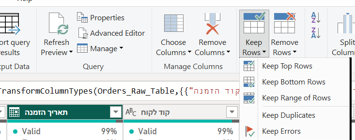
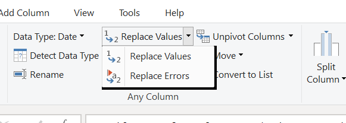
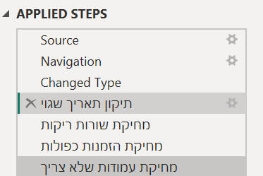
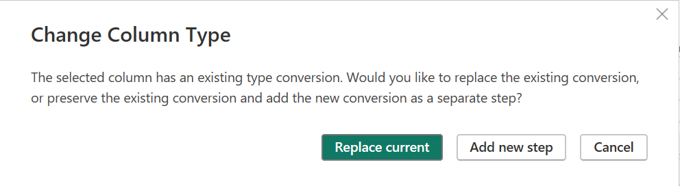
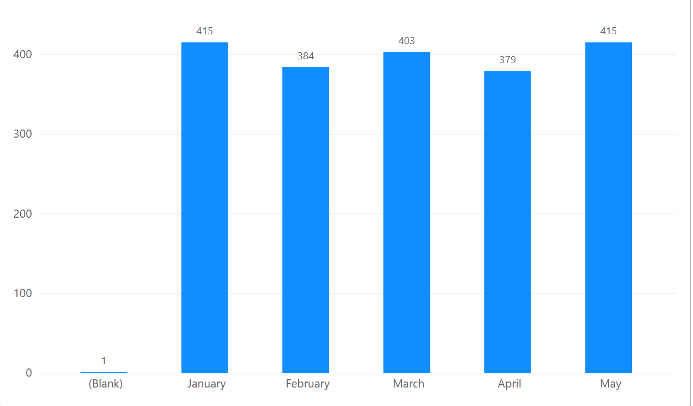
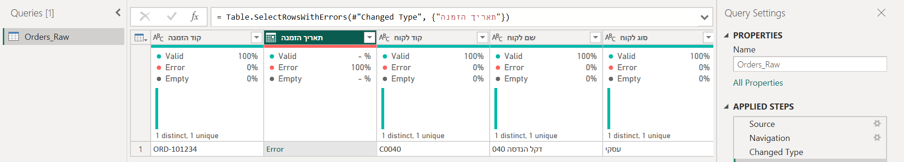
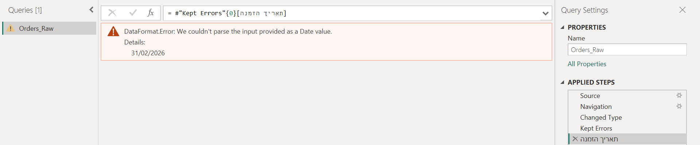
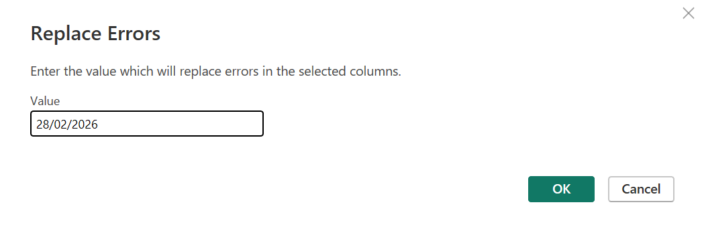
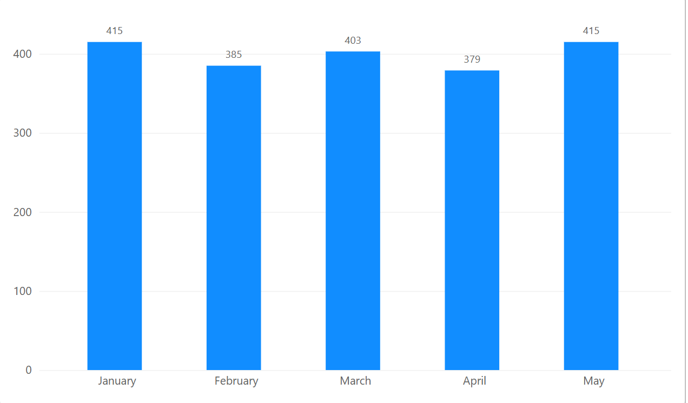

בשבוע שעבר מחקנו שורות שלמות: ריקות וכפולות. היום הבעיה יושבת בתוך שורה טובה: תאריך שגוי, מחיר חסר.
מחליטות אם למחוק או להציל, מורידות עמודות שאין בהן מידע, ומתחילות לתעד כל תיקון. בסוף רואות בגרף לפי חודש מה השתנה.
שאלה
←
איסוף נתונים
←
טיוב והכנה
←
ניתוח
←
הצגה
←
החלטה
לא היית במיט?
עברי על שלבים 0–1 עם ההקלטה, ואחר כך עשי את כרטיס החדר לבד. החדרים עצמם לא מוקלטים, ולכן הכרטיס כתוב כך שאפשר לעבוד איתו לבד.
יודעות לומר, לכל בעיה, אם מוחקות שורה, מצילות תא או מורידות עמודה.
כל בעיה בנתונים יושבת באחד משלושה מקומות. המקום קובע מה עושים איתה.
שורה שכולה בעיה ← מוחקות שורהשורה ריקה לגמרי, או הזמנה שנרשמה פעמיים. אין בה שום מידע חדש. את זה עשינו בשבוע שעבר.
תא אחד בשורה טובה ← מצילותתאריך שגוי, מחיר חסר. כל שאר השורה אמיתי, ואם מוחקות אותה מאבדות תדלוק או הזמנה שקרו באמת.
עמודה בלי מידע ← מורידות עמודהעמודה ריקה כולה, או עם ערך אחד בכל השורות. היא לא עונה על אף שאלה.
להציל, אבל במה? ערך שמחליפות בו צריך סיבה. ״בינואר כל תדלוק של בנזין 95 עלה 7.40״ היא סיבה. ״נראה לי״ היא לא.
ולפעמים התשובה הנכונה היא כן למחוק. אין תשובה אחת נכונה. יש תשובה מנומקת ורשומה.
מה שלא כתוב, לא קרה. מהיום כל תיקון נרשם בטבלת התיעוד: מה הבעיה, איך גיליתן, מה עשיתן ולמה.
י״ב: הטבלה הזו היא פרק הטיוב בעבודה. י״א: זה מה שבבגרות נקרא ״לסמן בצהוב ולהסביר״.
שלב 1 · עושות יחד · תדלוק רכביםמצילות, מורידות, ורושמות
ממשיכות מקובץ התדלוק של שבוע שעבר. בו כבר מחקנו את הקודים הכפולים.
1.1חוזרות לפאוור קוורי
פאוור קוורי פתוח על התדלוק, עם פרופיל על כל הנתונים.
איך עושים
פותחות את Power BI\שיעור 2\תדלוק.pbix משבוע שעבר.
Home › Transform data.
למטה משמאל לוחצות על Column profiling based on top 1000 rows, ובוחרות entire data set.
זה חוזר ל־1,000 בכל פתיחה. כל פעם שנכנסות לפאוור קוורי, הדבר הראשון: entire data set.
לא שמרתי את קובץ התדלוק
מורידות שוב את תדלוק רכבים.xlsx, טוענות עם Transform Data (לא Load),
ומדליקות את שלוש התיבות בלשונית View. את הכפילויות תמחקו אחר כך, בזמן הפתוח: קוד תדלוק ← Remove Rows › Remove Duplicates.
1.2שגיאה: קודם מסתכלות, אחר כך מתקנות
יודעות מה כתוב בתא השגוי, ובמקום השגיאה יש תאריך תקין.
איך עושים
לוחצות על הכותרת תאריך.
Home › Keep Rows › Keep Errors. נשארות רק השורות עם שגיאה.

לוחצות על המילה Error בתא, ומסתכלות למטה: מה היה כתוב שם?
מוחקות את שני השלבים שנוספו ביומן: ה־X שליד השלב, מהאחרון לראשון.
לוחצות שוב על הכותרת תאריך.
Transform › Replace Values ▾ › Replace Errors.

כותבות 01/01/2026 ולוחצות OK.
מה אמור להופיע?
ביומן שלב חדש, Replaced Errors, ושלבי הבדיקה כבר לא שם. מעל עמודת התאריך: Error 0%.
פילטר בדיקה = למחוק. באקסל סינון רק מסתיר שורות. בפאוור קוורי הוא מוחק אותן באמת, והמחיקה נשמרת ביומן.
שכחתן את שלב הבדיקה? בדוח תופיע רק השורה השגויה.
למה להציל ולא למחוק? כל שאר השורה הוא תדלוק אמיתי: רכב, כמות, מחיר. רק התאריך נכתב במילים.
Replace Errors מתאים כשיש בעמודה שגיאה מסוג אחד, ואנחנו יודעות מה הערך הנכון.
1.3מחיר חסר: למחוק או להציל?
יודעות לנמק מה עשינו עם התדלוקים שאין להם מחיר.
איך עושים
לוחצות על הכותרת מחיר לליטר, ומסתכלות ב־Column statistics: כמה Empty?
החץ שליד מחיר לליטר ← מסמנות רק (null) ← OK. מסתכלות: איזה דלק, ובאיזה חודש?
מוחקות את שלב הסינון ביומן (ה־X שלידו). פילטר בדיקה.
לוחצות שוב על מחיר לליטר. Transform › Replace Values.
ב־Value To Find כותבות null, וב־Replace With כותבות 7.40. OK.
מה אמור להופיע?
מעל מחיר לליטר: Empty 0%. וביומן שלב Replaced Value.
הדיון של השיעור. שישה תדלוקים, כולם בנזין 95, כולם בינואר. ובינואר כל תדלוק של בנזין 95 עלה 7.40 בדיוק.
אז מצילות, וכותבות למה. אילו המחירים בינואר היו קופצים מ־7 ל־8, אולי היינו מוחקות, וגם את זה כותבות.
1.4עמודות בלי מידע
שתי עמודות פחות, ושלב אחד חדש ביומן.
איך עושים
מסתכלות על שם המתדלק ועל שם התחנה: מה כתוב מעליהן, ומה ב־Distinct?
לוחצות על הכותרת שם המתדלק.
עם Ctrl לוחצות גם על שם התחנה.
Home › Remove Columns.
מה אמור להופיע?
ביומן Removed Columns, ושתי העמודות נעלמו.
עמודה ריקה כולה לא עונה על שום שאלה. עמודה עם ערך אחד (כל התדלוקים באותה תחנה) גם לא: אין מה להשוות.
והקובץ המקורי לא משתנה. אם יתברר שצריך אותן, מוחקות את השלב והן חוזרות.
1.5שמות בעברית לשלבים
כל שלב ביומן אומר בעברית מה הוא עשה.
איך עושים
לוחצות על שלב ביומן.
לוחצות F2 (או קליק ימני ← Rename).
כותבות מה השלב עשה, ולוחצות Enter. וכך לכל השלבים מהיום ומשבוע שעבר.
מה אמור להופיע?

כך זה נראה בנתוני ההזמנות. מי שתפתח את הקובץ בעוד חודש תבין מה נעשה, בלי לשאול.
עוברות על היומן מלמעלה למטה, ולכל שלב של תיקון כותבות שורה בטבלה.
בדיעבד, בלי לזכור. את התיקונים של שבוע שעבר לא צריך לזכור: הם כתובים ביומן, לפי הסדר.
מה כותבים בכל עמודה, ודוגמה מלאה: טבלת התיעוד.
י״א — הגשר לבגרות. בבגרות עושים את אותו הדבר באקסל: מוצאות את הבעיה, מסמנות אותה בצהוב, ומסבירות מה עשיתן.
פאוור קוורי עושה את הסימון לבד: כל שלב ביומן הוא ״סימון בצהוב״ עם שם.
שלב 2 · בחדרים · בזוגות · כ־20 דקות · נתוני הזמנותכרטיס החדר: להציל הזמנה, ולראות אותה בגרף
ממשיכות מקובץ ההזמנות של שבוע שעבר. נשארה בו בעיה אחת, תאריך שגוי, והיום רואות אותה בדוח לפני שמתקנות.
לא היית בשיעור 2? עשי קודם את 2.1 ו־2.4 בכרטיס החדר של שיעור 2, ושמרי בשם הזמנות. עשר דקות.
אי אפשר לקבל את הקובץ מחברה: קובץ pbix זוכר איפה האקסל יושב במחשב שלה.
נהגת: משתפת מסך ולוחצת. בת הזוג עושה את אותו הדבר במחשב שלה ומשווה.
נווטת: מקריאה את הצעד ובודקת את ה־✔.
2.1פתיחה: סוגים
התאריך מסומן כתאריך, ושני המחירים ככסף ($).
איך עושים
פותחות את Power BI\שיעור 2\הזמנות.pbix.
Home › Transform data, ובתחתית entire data set.
מסתכלות על האייקון שליד תאריך הזמנה. אמור להיות לוח שנה.
ליד מחיר לפריט כתוב 1.2? לוחצות עליו ← Fixed decimal number ← Replace current.
אותו דבר ב־סך הכל מחיר.
מה אמור להופיע?
לוח שנה ליד תאריך הזמנה, ו־$ ליד שני המחירים. מי שעשתה את זה בשבוע שעבר, לא משנה כלום.

למה דווקא עכשיו? היום בונות גרף לפי חודש. פאוור BI יודע לפרק לחודשים רק עמודה מסוג תאריך.
2.2הגרף ״לפני״
גרף עמודות של מספר ההזמנות בכל חודש, לפני התיקון.
איך עושים
Home › Close & Apply. קופצת הודעה על שגיאה אחת? לוחצות Close.
בדוח: קליק על שטח ריק, ובחלונית Visualizations בוחרות Clustered column chart.
גוררות את תאריך הזמנה אל X-axis.
גוררות את קוד הזמנה אל Y-axis.
ב־X-axis, מתחת לתאריך הזמנה, לוחצות על ה־X שליד Year.
ה־X שליד Quarter.
ה־X שליד Day. נשאר רק Month.
בחלונית Visualizations, בלשונית העיצוב (המברשת), מדליקות Data labels.
מה אמור להופיע?
ב־Y-axis כתוב Count of קוד הזמנה. בגרף חמש עמודות, January עד May, ובפברואר 384.
ולפניהן, ראשונה משמאל, עמודה שישית בשם (Blank), עם 1. כמעט לא רואים אותה, ולכן הדלקנו את המספרים.

העמודה הראשונה משמאל היא ה־(Blank). בלי המספר 1 מעליה, היה קשה לראות אותה.
אומרות בקול לבת הזוג: מאיפה הגיעה ה־(Blank)?
הזמנה בלי חודש. כשטוענות לדוח, תא עם שגיאה נטען ריק. ההזמנה נספרת, אבל הגרף לא יודע לאיזה חודש לשייך אותה.
שורה אחת מתוך 1,997, ובדוח כבר יש עמודה שאף אחד לא יודע להסביר.
2.3מוצאות את השגיאה
יודעות באיזו הזמנה השגיאה, ומה כתוב שם.
איך עושים
Home › Transform data, ובתחתית entire data set.
לוחצות על הכותרת תאריך הזמנה.
Home › Keep Rows › Keep Errors.
מה אמור להופיע?
שורה אחת: ORD-101234, ובתאריך כתוב Error.

לוחצות על המילה Error, ומסתכלות למטה על השורה Details.
מה אמור להופיע?

31 בפברואר. תאריך שלא קיים.
מוחקות את שני השלבים שנוספו ביומן: קודם את האחרון (תאריך הזמנה), ואז את Kept Errors.
מה אמור להופיע?
שוב 1,997 שורות, והשלב האחרון ביומן הוא שוב מה שעשיתן בשבוע שעבר (Removed Duplicates, או Changed Type אם שיניתן סוגים היום).
2.4מחליטות, ומצילות
במקום השגיאה יש תאריך, ואתן יודעות לנמק למה דווקא הוא.
איך עושים
מחליטות יחד: למחוק את ההזמנה, או להציל אותה? ובאיזה תאריך?
לוחצות על הכותרת תאריך הזמנה.
Transform › Replace Values ▾ › Replace Errors.
כותבות 28/02/2026 ולוחצות OK.

מה אמור להופיע?
ביומן Replaced Errors, ומעל תאריך הזמנה Error 0%.
למה להציל? זו הזמנה אמיתית: לקוח, שלושה כיסאות, 1,621 ₪. מחיקה הייתה מעלימה כסף מהדוח.
ולמה 28? החודש כנראה נכון והיום לא. 28 הוא היום האחרון של פברואר 2026, הכי קרוב למה שנכתב. זו הנחה, ולכן כותבות אותה בטבלה.
🔄 מתחלפות: הנהגת מפסיקה לשתף, והשנייה משתפת את המסך שלה.
2.5עמודות מיותרות, ושמות בעברית
15 עמודות, ולכל שלב ביומן יש שם בעברית.
איך עושים
לוחצות על הכותרת קוד סניף.
עם Ctrl לוחצות גם על מקור ייבוא.
Home › Remove Columns.
מה אמור להופיע?
למטה משמאל: 15 COLUMNS.
נותנות שם בעברית לכל שלב של תיקון: קליק על השלב, F2, כותבות, Enter. גם לשלבים משבוע שעבר.
מה אמור להופיע?ארבעה שלבי תיקון, בשמות שלכן. F2 לא מגיב? קליק נוסף על השלב, ושוב F2.
למה דווקא שתי אלה? בכל השורות אותו סניף ואותה מערכת. הן לא עונות על אף שאלה של החנות.
2.6הגרף ״אחרי״
אותו גרף, ומשהו בו השתנה.
איך עושים
Home › Close & Apply. הפעם בלי הודעת שגיאה.
מסתכלות על הגרף.
מה אמור להופיע?
עמודת ה־(Blank) נעלמה, ובפברואר 385 במקום 384.

שאלה לחזרה מהחדר: לאן הלכה ה־(Blank)?
שומרות (Ctrl+S).
בשביל זה מטייבים. ההזמנה לא נעלמה: היא עברה למקום הנכון. בלי התיקון, מי שקוראת את הדוח הייתה שואלת ״מה זה (Blank)?״, ואף אחד לא היה יודע לענות.
2.7ממלאות את טבלת התיעוד, בדיעבד
שורה בטבלה לכל שלב תיקון ביומן, משבוע שעבר ומהיום.
הערך היה טקסט ולא תאריך. כל שאר השורה תקין, ולכן החלפתי ולא מחקתי
שם השלב ביומן
בדיוק כמו ב־Applied Steps
תיקון תאריך שגוי
״כי זה היה שגוי״ זה לא ״למה״. ״למה״ עונה על השאלה שבשלב 0: למה מחקתן ולא הצלתן, או להפך.
ואם הצלתן, מאיפה הערך שהכנסתן.
י״ב: שלושת הדברים שמצאתן במסד שלכן בשבוע שעבר הם השורות הראשונות. י״א: ממלאות על נתוני ההזמנות.
שלב 3 · י״ב בלבד · עד השיעור הבאמתקנות ומתעדות את המסד שלכן י״ב
כל בעיה שמצאתן מתוקנת, עם שם בעברית ביומן ושורה בטבלה.
מתקנות, אחת אחת
איך עושים
פותחות את המסד שלנו - שיעור 1. Home › Transform data, ו־entire data set.
בטבלת התיעוד כותבות שלוש שורות, אחת לכל דבר שמצאתן בשבוע שעבר: עמודה, הבעיה, איך גיליתי.
לכל בעיה מחליטות: למחוק שורה, להציל תא, או להוריד עמודה.
מתקנות, ונותנות לשלב שם בעברית.
משלימות בטבלה את מה עשיתי, למה ושם השלב.
Home › Close & Apply, ושומרות בשם המסד שלנו - שיעור 3.
זה כבר פרק. טבלה מלאה ויומן עם שמות בעברית הם הטיוטה הראשונה של פרק הטיוב בעבודה.
מה מגישות בקלאסרום
טבלת התיעוד, מלאה בכל העמודות.
צילום מסך של ה־Applied Steps, עם השמות בעברית.
נתקעתי
כל אלה קרו למורות בקורס המקורי, או לנו כשהכנו את השיעור.
אחרי Keep Errors נשארה רק שורה אחת, וגם בדוח
שכחתן למחוק את שלב הבדיקה. ביומן: קליק על Kept Errors ← Delete. זה בדיוק הכלל ״פילטר בדיקה = למחוק״.
לחצתי על Error ונוסף שלב עם שם של עמודה
הקליק ״נכנס״ לתא כדי להראות את השגיאה, ונרשם כשלב. מוחקות אותו, יחד עם Kept Errors.
Replace Errors לא מופיע
הוא מתחבא בחץ הקטן שליד Replace Values, בלשונית Transform. ובודקות שהעמודה מסומנת.
בגרף יש עמודה אחת, 2026
נשארה ההיררכיה: Year עדיין ב־X-axis. מוחקות את Year, Quarter ו־Day, ונשאר Month.
ב־Y-axis כתוב First, או שמופיעה רשימה של קודים
החץ שליד קוד הזמנה ב־Y-axis ← Count.
הטבלה משבוע שעבר הפכה לגרף
הקליק ״על שטח ריק״ נפל על הטבלה, והגרף החליף אותה. Ctrl+Z, ואז קליק על מקום שבאמת ריק בדף. אם אין מקום, גוררות קודם את הטבלה הצידה.
אין לי (Blank) בגרף
היא הראשונה משמאל, לא בסוף. מדליקות Data labels: עמודה של 1 ליד 400 כמעט לא נראית. ואם עדיין אין, אולי השגיאה כבר תוקנה. מסתכלות ביומן אם יש Replaced Errors.
הפעולה נכנסה לאמצע היומן
היה מסומן שלב באמצע כשעשיתן את הפעולה. לוחצות על השלב האחרון לפני כל פעולה חדשה. אם זה כבר קרה: אפשר לגרור את השלב למקום, או למחוק ולעשות שוב.
F2 לא משנה את שם השלב
קליק על השלב, מחכות שנייה, ורק אז F2. אם עדיין לא: קליק ימני על השלב ← Rename.
יש לי שלב Reordered Columns שלא עשיתי
קליק על כותרת עמודה נרשם לפעמים כגרירה, והעמודה זזה. אם זה השלב האחרון, מוחקות אותו. סדר העמודות לא משנה את הנתונים, אז אפשר גם להשאיר.
הגרף לא השתנה
לא לחצתן Close & Apply, או שסגרתן ב־X. בפס הצהוב בדוח: Apply changes.